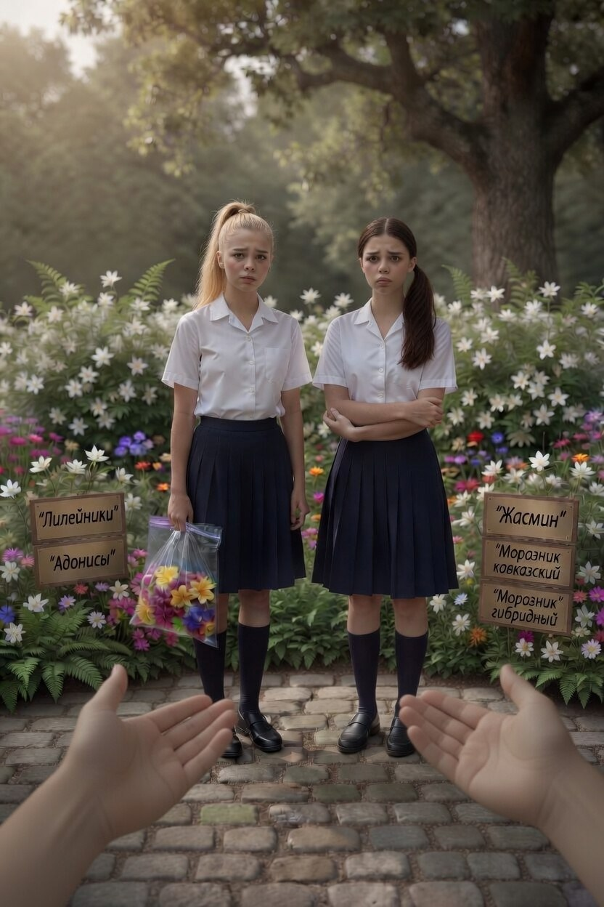
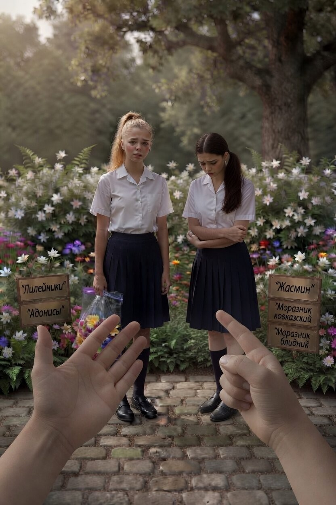

Вы идёте по ботаническому саду. Клумбы с редкими цветами, таблички с названиями. Вдалеке видишь двух школьниц. Одна из них срывает цветок с клумбы и кладёт в пакет. Вторая срывает ещё один. «Для гербария надо, — говорит первая. — Тут такие красивые, учительница оценит». Вторая сомневается: «А можно ли здесь рвать? Вроде сад же...» «Да никто не увидит, — отвечает первая. — Подумаешь, пару штук». Они замечают вас. Первая прячет пакет за спину. Вторая краснеет

Подойти и спросить: «Вы знаете, что эти цветы — коллекционные? Некоторые сорта единственные в республике»

Подойти и сказать: «А вы знаете, что в прошлом году одну девочку оштрафовали на 5 тысяч за срыв таких цветов? Родители потом не рады были»